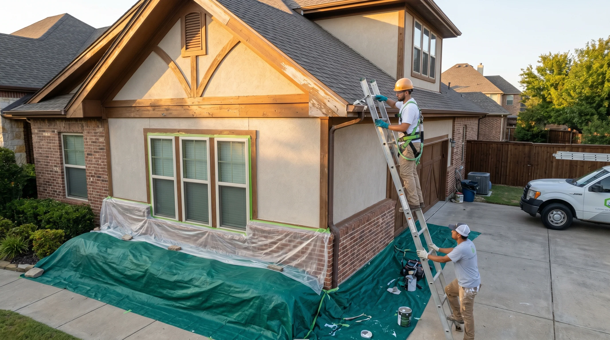
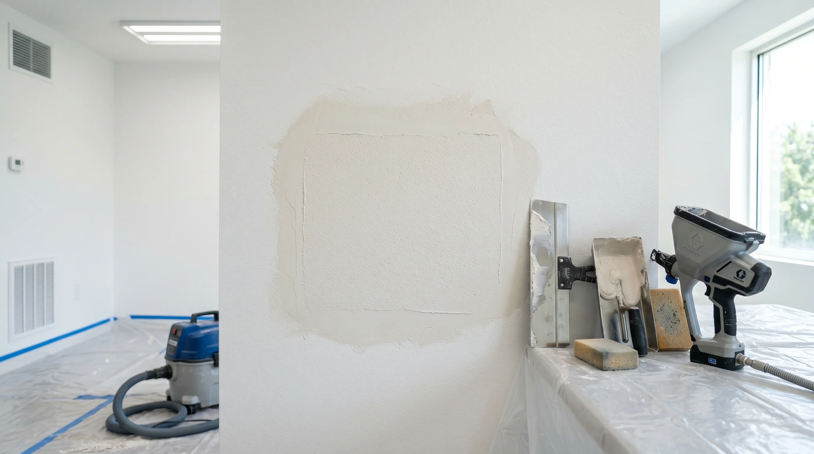
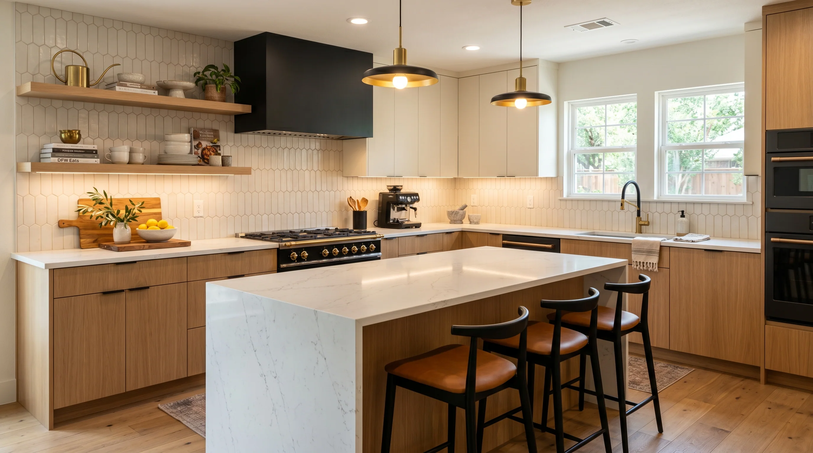

North Texas home guides for real decisions.
This public library now includes cost guides, Texas problem guides, DIY decision tools, maintenance calendars, design trends, material explainers, replacement timing guides, and resale planning for DFW homeowners.
Cost Guides.
Start here when the main question is budget, scope, timeline, or what changes the final number.
 Kitchen
KitchenKitchen Remodel Cost DFW
A complete DFW kitchen remodel cost guide with scope tiers, cabinet choices, counters, timeline, permits, and budgeting advice.
Open guide ->BathroomBathroom Remodel Cost North Texas
Shower, tile, vanity, waterproofing, plumbing, timeline, and DFW bathroom remodel planning ranges.
Open guide ->PaintingInterior Painting Cost DFW
Room-by-room painting costs, prep, trim, ceilings, doors, texture, paint quality, and occupied-home planning.
Open guide ->FlooringLVP Flooring Cost Texas
Material, labor, demo, slab prep, underlayment, transitions, stairs, and realistic flooring cost planning.
Open guide ->TileTile Installation Cost DFW
Backsplashes, floors, showers, large-format tile, grout, waterproofing, and layout decisions.
Open guide ->DrywallDrywall Repair Cost DFW
Holes, cracks, water damage, texture matching, skim coating, ceilings, and paint blending.
Open guide ->HandymanHandyman Rates DFW 2026
Common repair prices, minimum visits, bundling advice, scheduling notes, and scope boundaries.
Open guide ->CabinetsCabinet Painting vs Replacement
Cost, durability, ROI, door style, box condition, timeline, and decision rules for DFW kitchens.
Open guide ->DecksDeck Refinishing Cost Texas
Cleaning, sanding, stripping, staining, board repair, railings, heat exposure, and maintenance timing.
Open guide ->Whole HomeHome Renovation Cost DFW
Kitchens, bathrooms, flooring, painting, drywall, trim, decks, punch lists, phasing, contingency, and ROI.
Open guide ->Texas Problem Guides.
Use these when the home is showing a symptom: cracks, stains, storm damage, peeling paint, HOA questions, humidity, hard water, or new-build punch items.
 Safety
SafetyPopcorn Ceiling Asbestos in North Texas
When to test, what warning signs matter, what not to disturb, and how to plan safe ceiling updates after testing.
Open guide ->
FenceTree Root Fence Damage Dallas
Leaning posts, pushed gates, uneven panels, soil movement, root-safe planning, repair options, and when to involve an arborist.
Open guide ->
DrywallFoundation Cracks & Drywall Repair Texas
Clay soil movement, cosmetic vs structural warning signs, texture repair, recurring cracks, and when to call an engineer.
Open guide -> Tile
TileHard Water Tile Stains Texas
Showers, grout, glass, natural stone, mineral deposits, safe cleaners, sealers, ventilation, and repair planning.
Open guide ->HOAHOA Approved Home Improvements DFW
Exterior paint, fences, doors, lighting, visible repairs, approval packets, contractor notes, and avoiding avoidable rework.
Open guide -> Bathroom
BathroomHumidity Bathroom Tile Problems DFW
Grout failure, caulk cracks, mildew, loose tile, ventilation, shower waterproofing, and repair planning.
Open guide ->New BuildNew Construction Punch List DFW
Builder warranty items, blue tape, drywall cracks, doors, caulk, tile, cabinets, fixtures, and move-in repairs.
Open guide ->FoundationSlab Foundation Home Repairs DFW
Drywall cracks, stuck doors, flooring gaps, trim, cabinets, plumbing clues, cosmetic timing, and post-foundation work.
Open guide ->StormsStorm Damage Repairs North Texas
Fences, exterior trim, water stains, drywall, doors, caulk, temporary protection, documentation, and sequencing.
Open guide ->PaintingTexas Summer Heat Paint Peeling Fix
Exterior trim, siding, doors, caulk failure, sun-facing walls, primer, scraping, sanding, repaint timing, and prevention.
Open guide ->DIY vs Pro Guides.
Use these before buying tools or starting weekend work. They show when DIY makes sense and when hidden risk changes the math.
Deck Refinishing DIY vs Professional
Deck refinishing DIY vs professional guide for Texas homeowners: cleaning, sanding, stripping, stain choice, weather timing, board repair, railings, and when to hire.
Open guide ->DrywallDrywall Repair DIY vs Professional
Drywall repair DIY vs professional guide for holes, cracks, ceiling stains, texture matching, paint blending, tools, risk, and when a patch needs a pro.
Open guide ->FenceFence Repair Yourself: What Works and What Does Not
Fence repair DIY guide for Texas homeowners: loose pickets, leaning posts, gate sag, root damage, storm damage, tools, safety, and when to call a pro.
Open guide ->FlooringInstall LVP Yourself: Common Mistakes
DIY LVP installation guide for common mistakes: slab prep, moisture, expansion gaps, transitions, door jambs, plank direction, underlayment, and when to hire.
Open guide ->CabinetsPaint Kitchen Cabinets Without a Sprayer
Guide to painting kitchen cabinets without a sprayer: prep, cleaning, sanding, primer, brush and roller technique, cure time, durability, and when to hire.
Open guide ->PaintingPainting Yourself vs Hiring a Contractor
DIY painting vs contractor guide for DFW homeowners: prep, walls, trim, ceilings, tall rooms, paint quality, time, tools, finish standards, and when to hire.
Open guide ->HardwoodSand Hardwood Floors Yourself? The Truth for Texas Homes
Honest guide to sanding hardwood floors yourself: rental sanders, dust, uneven sanding, finish mistakes, engineered wood limits, stains, and when to hire a pro.
Open guide ->TileDIY Tile Backsplash Guide
DIY tile backsplash guide for layout, outlets, cuts, grout, adhesive, edge trim, wall prep, range walls, common mistakes, and when to hire a tile installer.
Open guide ->BathroomWaterproof Shower DIY vs Contractor
Waterproof shower DIY vs contractor guide for membranes, pans, slope, niches, curbs, tile, grout, flood testing, common failures, and when to hire.
Open guide ->PlanningWhen DIY Costs More Than Hiring a Pro
DFW homeowner guide to when DIY costs more than hiring a pro: tools, rework, materials, safety, water damage, finish standards, timelines, and resale risk.
Open guide ->Maintenance Guides.
Keep finishes, systems, decks, grout, appliances, paint, and seasonal home details from turning into bigger repairs.
Annual Home Maintenance North Texas
A seasonal North Texas home maintenance checklist for clay soil, storms, heat, HVAC strain, exterior paint, gutters, caulk, decks, fences, and water prevention.
Open guide ->AppliancesMonthly Appliance Maintenance Checklist
A practical monthly appliance maintenance checklist for refrigerators, dishwashers, disposals, washers, dryers, ranges, vents, filters, leaks, and small warning signs.
Open guide ->DecksDeck Maintenance Schedule Texas
Texas deck maintenance schedule for cleaning, inspection, staining, board repair, fasteners, railings, mildew, UV exposure, storm checks, and summer heat.
Open guide ->
KitchenHow to Extend the Life of a Kitchen Remodel
Kitchen remodel care guide for cabinets, counters, backsplash, grout, caulk, appliances, paint, hardware, ventilation, cleaning habits, and maintenance after renovation.
Open guide ->PaintingExterior Paint Maintenance Texas
Texas exterior paint maintenance guide for heat, UV, caulk cracks, peeling trim, chalking, siding, doors, touch-ups, cleaning, and repaint timing.
Open guide ->HardwoodHardwood Floor Maintenance in Texas Humidity
Texas hardwood floor maintenance guide for humidity swings, cleaning, gaps, cupping, scratches, engineered wood, rugs, sunlight, moisture, and seasonal care.
Open guide ->TileHow to Maintain Grout Without Replacing It
Grout maintenance guide for cleaning, sealing, stains, mildew, cracked caulk, hard water, shower humidity, kitchen backsplashes, and when replacement is needed.
Open guide ->SummerPrepare Your Home for Texas Summer
Texas summer home prep checklist for HVAC strain, exterior paint, caulk, gutters, drainage, decks, fences, windows, doors, appliances, and heat-related repairs.
Open guide ->WinterPrepare Your Home for DFW Winter
DFW winter home prep guide for freezes, hose bibs, weatherstripping, doors, attic access, exterior caulk, plumbing, gutters, insulation clues, and post-freeze checks.
Open guide ->BathroomPrevent Bathroom Water Damage
Bathroom water damage prevention guide for showers, caulk, grout, toilets, vanities, fans, supply lines, flooring, stains, leaks, and maintenance routines.
Open guide ->Design & Trend Guides.
Design, trend, and resale guides for homeowners choosing finishes that need to look current and still make sense later.
BacksplashBacksplash Trends for Open Kitchens in Texas
Backsplash trend guide for open Texas kitchens: slab backsplashes, handmade tile, zellige looks, neutral texture, grout choices, range walls, and resale-safe design.
Open guide ->BathroomBathroom Designs Buyers Want in Southlake
Southlake bathroom design guide for buyers: luxury showers, vanities, stone looks, lighting, storage, neutral palettes, wet rooms, and resale-friendly finish planning.
Open guide ->FlooringBathroom Flooring Trends McKinney 2026
McKinney bathroom flooring trend guide for 2026: porcelain tile, stone looks, slip resistance, heated floors, grout, LVP limits, and resale-safe choices.
Open guide ->DecksBest Deck Materials for Texas Summer
Texas deck material guide for summer heat: pressure-treated wood, cedar, composite, PVC, coatings, shade, maintenance, heat retention, and repair planning.
Open guide ->TileBest Tile for Kitchens in Plano and Frisco
Plano and Frisco kitchen tile guide for backsplashes, porcelain floors, grout, open kitchen sight lines, resale-friendly style, and durable family-home choices.
Open guide ->CabinetsCabinet Colors With Best Resale Value in DFW
DFW cabinet color guide for resale: warm white, greige, taupe, soft green, navy, two-tone kitchens, wood stain, lighting, and cabinet painting decisions.
Open guide ->ROIHome Upgrades With Best ROI When Selling in DFW
DFW home upgrade ROI guide for selling: paint, drywall, flooring, cabinets, bathrooms, kitchens, curb appeal, lighting, repairs, and buyer-visible improvements.
Open guide ->KitchenKitchen Trends DFW 2026
DFW kitchen trends for 2026: warm cabinets, quartz, slab backsplashes, storage, lighting, islands, appliance planning, resale-safe colors, and practical layouts.
Open guide ->FlooringLVP vs Hardwood in DFW 2026
LVP vs hardwood guide for DFW homes in 2026: cost, durability, resale, pets, slab moisture, humidity, repairs, sunlight, sound, and design tradeoffs.
Open guide ->PaintingPopular Paint Colors North Texas 2026
North Texas paint color guide for 2026: warm whites, greige, taupe, muted greens, exterior colors, trim, cabinets, lighting, resale, and room-by-room planning.
Open guide ->Materials & Finish Guides.
Compare paint finishes, tile, grout, LVP, cabinet materials, deck stain, backsplash styles, and bathroom vanity choices before ordering materials.
PinturaTipos de Pintura para Interiores en Texas
Guia en espanol sobre tipos de pintura interior en Texas: acabado mate, eggshell, satin, semi-gloss, pintura para banos, cocinas, trim, gabinetes y paredes familiares.
Open guide ->BacksplashTypes of Backsplash: Subway, Herringbone, Mosaic
A backsplash style guide for subway tile, herringbone, mosaic, zellige looks, slab backsplash, grout choices, outlets, range walls, and DFW kitchen planning.
Open guide ->BathroomTypes of Bathroom Vanity: Floating vs Freestanding
A bathroom vanity guide for floating, freestanding, built-in, double, furniture-style, storage, plumbing, counters, sinks, lighting, and DFW remodel planning.
Open guide ->DecksTypes of Deck Stain: Solid vs Semi-Transparent
Compare solid, semi-transparent, transparent, oil-based, water-based, and hybrid deck stains for Texas heat, UV, prep, maintenance, and refinishing.
Open guide ->DrywallTypes of Drywall: Moisture, Fire, Soundproof
A drywall type guide for standard drywall, moisture-resistant panels, fire-rated drywall, sound-reducing board, cement board, texture, and DFW repair planning.
Open guide ->TileTypes of Grout: Sanded vs Unsanded vs Epoxy
Compare sanded, unsanded, epoxy, premixed, and high-performance grout for showers, backsplashes, floors, grout width, cleaning, and DFW tile projects.
Open guide ->PaintingTypes of Interior Paint Finishes
A DFW interior paint finish guide comparing flat, matte, eggshell, satin, semi-gloss, gloss, cabinet enamel, trim paint, bath paint, cleaning, and sheen selection.
Open guide ->CabinetsTypes of Kitchen Cabinet Materials
A kitchen cabinet material guide for solid wood, plywood, MDF, particleboard, thermofoil, laminate, painted cabinets, refinishing, durability, and DFW remodeling.
Open guide ->FlooringTypes of LVP Flooring and Wear Layer Guide
A DFW luxury vinyl plank guide explaining wear layer, SPC, WPC, click-lock, glue-down, underlayment, thickness, texture, waterproof claims, and installation planning.
Open guide -> Tile
TileTypes of Tile: Porcelain, Ceramic, Stone
A DFW tile material guide comparing porcelain, ceramic, natural stone, large-format tile, mosaics, slip resistance, grout, waterproofing, and installation planning.
Open guide ->Repair Timing Guides.
Use these guides when the question is whether to repair, replace, refinish, repaint, remodel, or hire help.
ResaleDFW Pre-Sale Home Repair Checklist
A practical DFW pre-sale repair checklist for paint, drywall, grout, doors, lighting, curb appeal, inspection risk, photos, and repair priorities before listing a home.
Open guide ->TileHow to Tell If Grout Needs Replacing
Learn when grout can be cleaned, sealed, repaired, or fully replaced in bathrooms, showers, kitchens, and floors in North Texas homes.
Open guide ->DecksSigns a Deck Needs Replacement vs Repair
A Texas deck decision guide for rot, soft boards, railing movement, joist issues, fasteners, stain failure, sun damage, and when repair is no longer enough.
Open guide ->DrywallSigns Drywall Has Water Damage
How to spot drywall water damage in DFW homes, including stains, bubbles, soft texture, odors, baseboard swelling, ceiling marks, and when to repair after the leak is solved.
Open guide ->FlooringSigns Wood Floor Needs Refinishing
A Texas hardwood floor guide to scratches, dull finish, gray wear, water stains, cupping, gaps, sun fading, and when refinishing makes sense versus repair or replacement.
Open guide ->KitchenWhen Does a Kitchen Remodel Make Sense?
A DFW kitchen decision guide for remodel timing, cabinet function, layout problems, resale plans, appliance changes, water damage, budget, and when a refresh is enough.
Open guide ->PlanningWhen to Hire a Handyman vs Contractor
A practical DFW guide to deciding between handyman service, contractor, specialist, licensed trade, remodeler, or DIY for home repairs and small projects.
Open guide ->PaintingWhen to Repaint an Exterior House in Texas
A Texas exterior repaint guide for fading, peeling, caulk failure, trim rot, sun exposure, HOA colors, weather windows, prep, primer, and repaint timing.
Open guide ->BathroomWhen to Replace Bathroom Tile
A bathroom tile replacement guide for cracked tile, loose tile, failed grout, shower leaks, waterproofing, dated tile, resale, and when repair is enough.
Open guide ->FlooringWhen to Replace vs Repair Flooring
A DFW flooring decision guide for replacing vs repairing LVP, hardwood, tile, laminate, carpet, water damage, pet damage, slab issues, transitions, and resale.
Open guide ->